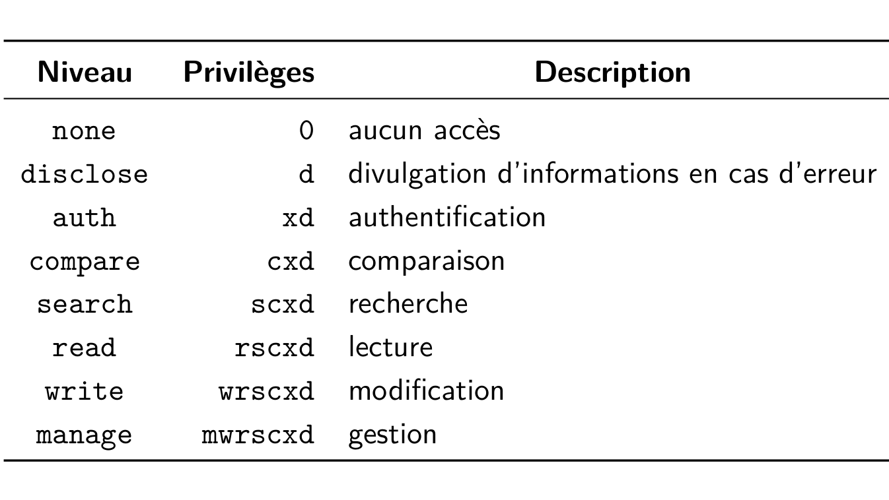

LDAP servers
Speaker : Benoit Tellier
Retrieve this presentation online : https://rawgit.com/chibenwa/openup02_03/master/presentation/index.html
And on GitHub
Objectives
- Know about LDAP
- Configure a LDAP server
- Use a LDAP client
- Use a LDAP server for PAM authentication
- Use a LDAP server for Web authentication
LDAP servers
What is LDAP ?
- Lightweight Directory Access Protocol
- Used to access X.500 directories
- X.500 is associated with X.400 messaging
- X.500 was queried with DAP other ISO protocols
- X.500 queried with LDAP is called a LDAP directory
- LDAP is a meta directory
- Port 389
Why bother with LDAP ?
- SGBDR is overkill for this
- Extended capabilities (see ACL section)
- Normalized != SQL and its extensions and SGBDR transport mechanisms
- Easy to replicate
LDAP data model...
- Contains entries
- Entries are composed of attributes
- If the directory represents persons...
Distinguished Name (DN)
- Identifies an entry
- dn attribute
LDIF format
- LDAP Data Interchange Format
- in UTF-8
- # comments
- Entries separated by blank lines...
- ... containing dn attribute
- One line per attribute : name: value
- value : might use base64
- names : not case sensitive
Example of LDIF file
dn: dc=example,dc=com
objectclass: dcObject
objectclass: organization
o: Example
postalAddress: 33, avenue Dennis-Ritchie
dn: ou=DSI,dc=example,dc=com
objectclass: organizationalUnit
ou: DSI
dn: cn=Prénom Nom,ou=DSI,dc=example,dc=com
objectclass: inetOrgPerson
cn: Prénom Nom
sn: Nom
uid: prenomnom
mail: prenom.nom@example.com
OpenLDAP
- LDAP server
- Libraries
- Tools
- Kurt Zeilenga in 1998
apt-get install slapd
SLAPD configuration
- /etc/ldap/slapd.conf
- /etc/ldap/slapd.d/*
- /var/lib/ldap
- /usr/share/slapd/slapd.conf
SLAPD configuration ...
- # comment
- ~ following of previous line
- Empty line ignored
- global/storage formats/database directives
Global directives
include /etc/ldap/schema/core.schema
loglevel stats
modulepath /usr/lib/ldap
moduleload back_bdbStorage formats directives
backend bdbdata directives
database bdb
suffix "dc=example,dc=com"
rootdn "cn=admin,dc=example,dc=com"ACL
- Full access by default
- Not a good idea
- => ACL
ACL example
access to *
by anonymous auth
by * readACL example
access to attr=userPassword
by self =xw
by anonymous auth
by * none
access to *
by self write
by users read
by * noneACL : people specification
- * => every body
- anonymous => anonymous users
- users => authenticated users
- self => associated user
- dn[.{regex|exact}]=expr => expression
- dn.{base|one|subtree|children}=DN => a DN
ACL : what ?
- * => every thing
- dn[.{regex|exact}]=expr
- dn.{base|one|subtree|children}=
- filter=...
- attrs=...
ACL : rights ?
Managing entries
slapadd -b ’dc=example,dc=com’ -l fichier.ldifslapd should not be running
slapcat -b ’dc=example,dc=com’ -l fichier.ldifslapindex -b ’dc=example,dc=com’slapd should not be running
LDAP servers
Installing command line clients
apt-get install ldap-utilsSearching a LDAP
ldapsearch -x -b ’dc=example,dc=com’ldapsearch -W -b ’dc=example,dc=com’ -D ’cn=admin,dc=example,dc=com’And with filters ... (RFC-4515)
(cn=Babs Jensen)
(!(cn=Tim Howes))
(&(objectClass=Person)(|(sn=Jensen)(cn=Babs J*)))
(o=univ*of*mich*)
(seeAlso=)Adding entries to a LDAP
ldapadd -W -D ’cn=admin,dc=example,dc=com’ \
-f fichier.ldifldapdelete -W -D ’cn=admin,dc=example,dc=com’ \
’cn=[...],dc=example,dc=com’Modifying a password
ldappasswd -W -A -S -D ’cn=[...],dc=example,dc=com’ldappasswd -W -S -D ’cn=admin,dc=example,dc=com’ \
’cn=[...],dc=example,dc=com’PAM authentication
Why PAM ?
- Go beyond /etc/passwd
- Works with extensions
- Contributed by SUN
- /etc/pam.conf vs /etc/pam.d
- Rules formats : type control module-path module-arguments
type
- account
- auth
- password
- session
control
- required
- requisite
- sufficient
- optional
- Rules formats : type control module-path module-arguments
module-path and module-arguments
- Path to modules
- pam_cracklib
- pam_deny
- pam_limits
- pam_listfile
- pam_unix
PAM example
auth required pam_unix.so try_first_pass nullok
auth optional pam_permit.so
auth required pam_env.so
account required pam_unix.so
account optional pam_permit.so
account required pam_time.so
password required pam_unix.so try_first_pass nullok sha512 shadow
password optional pam_permit.so
session required pam_limits.so
session required pam_unix.so
session optional pam_permit.soNSSwitch
- Access order to different data sources
- /etc/nsswitch.conf
- passwd, group and shadow
- hosts: files dns
NSSwitch example
passwd: files
group: files
shadow: files
publickey: files
hosts: files dns myhostname
networks: files
protocols: files
services: files
ethers: files
rpc: files
netgroup: files